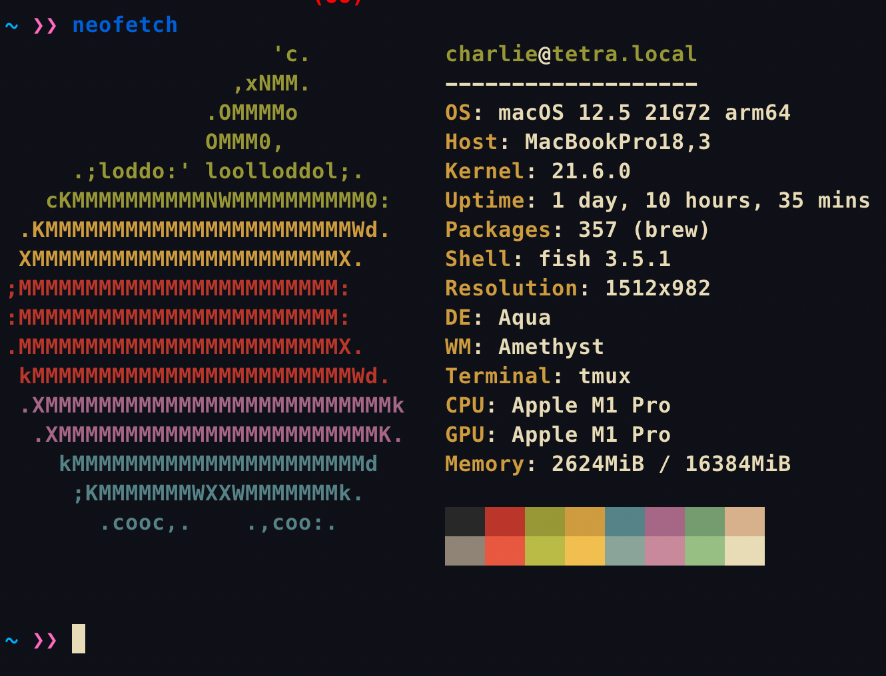

In your time as a Computer Scientist at Rice, you will learn many theoretical aspects of Computer Science and the way to apply programming to complex topics. However, another crucial step towards becoming a great Computer Scientist is efficiency as a developer. The Art of Lazy Programming is a one-credit course where students will be taught precisely that: students will learn vital information every programmer should know, tips on learning complex but time-saving tools, and most importantly, the answer to "how does one master their programming environment and gain the knowledge needed to be an experienced programmer"?
The intention of this class is to teach students various tools and topics such as grep, docker, and sshfs -- that will make their life easier by introducing efficiency. While students may learn some of these tools in classes and spend dozen of hours using them, their core benefits are never explicitly taught. Yet, mastering these tools will allow students to solve large-scale problems that seem impossibly complex. Additionally, upon completion of the course, students will also develop problem-solving skills that can be applicable outside Computer Science.
Week 0 is the first week of the course, where I introduce the course to the class. Watching the video is a great way to skip straight to the content and expectations of the class.
As computer scientists, we know that computers are great at aiding in repetitive tasks. However, far too often, we forget that this applies just as much to our use of the computer as it does to the computations we want our programs to perform. We have a vast range of tools available at our fingertips that enable us to be more productive and solve more complex problems when working on any computer-related problem. Yet many of us utilize only a small fraction of those tools; we only know enough magical incantations by rote to get by, and blindly copy-paste commands from the internet when we get stuck.
This class is an attempt to address this and close a gap between theory and practice.
I want to teach you how to make the most of the tools you know, show you new tools to add to your toolbox, and hopefully instill in you some excitement for exploring (and perhaps building) more tools on your own to be a true lazy programmer.
!!! note
The basics of bash will be covered in the next lesson.
There are many bash commands, but this short guide is meant to cover the essentials, either as an introduction for those unfamilar with Unix-based terminals or as a refresher for those more experienced.
keystroke / character function
uparrow and downarrowscroll through recently used commands tabautocomplete commands or file names / directories ctrl-ckill current process .hidden file prefix or current directory ~home directory ../up one directory | pipe for chaining multiple commands >output redirect *wild card character (e.g., use it find all files in the current directory that are python scripts $ ls *.py) $indicate a variable in bash (e.g., $HOME)
To navigate around the terminal you will need to know some basic commands for directory manipulation, file interaction, and process monitoring. To find out more information about any command, take advantage of the manuals in Unix by entering man command_name.
If you wish to use vim keybinds, you can by setting readline to set -o vi in your .bashrc.
If you wish to "pause" a command, you can use <C-z> to set the current process to the background. Then when you are ready to unpause, you can use fg to continue your progress.
VIDEO
Please view week0 installation for instructions on how to install everything needed for week0.
Please fill out the form / or send me your github username to be added to the team's repo.
The links are: https://forms.gle/7xPFEEouiEviU9vo8, https://github.com/RTAOLP/week0_section1, https://github.com/RTAOLP/week0_section2
Please take a look at the notes in the week0 notes for instructions the cli.
!!! note
The basics of bash will be covered in the next lesson, however, I would like you to do some experimenting yourself.
There are three parts to this homework. This is the only week where there will be more reading/exercises than coding. Remember Part 2 and Part 3 are graded on completion only.Everything should be submitted on github. Specifically to your section's repo.
All homework should be submitted to your section's repo through the git submodule version shown in the week0 installation guide instructions.
the name of your submodule should be lastname-firstname
everything should be committed to your own repo, I'll update the main repo when I'm grading everything. Don't worry about committing to the main repo once you set up your git submodule.
If anything takes more than an hour, you are free to not do the assignment.
Can you note anything you see on clear? What is the difference between my setup and your clear session? Upload your observations to the week0 notes as "part_1_notes.txt"
Install neofetch on clear and run it!
$ git clone https://github.com/dylanaraps/neofetch
$ cd neofetch
$ make PREFIX=./ install
Upload this output to the week0 notes as "neofetch.img".
Your output should look something like this:

git add part_1_notes.png
git add neofetch.img
git commit -m "part 1"
git push
Watch a 14 minute clip from this video and submit and push a file called "part_2_notes.txt" with anything you noticed. Specifically watch from 5:00 to 19:00. If you have time I would recommend you watching the whole thing.
That is
git add part_2_notes.txt
git commit -m "part 2 notes"
git push
Please read this article http://www.paulgraham.com/hp.html and submit a file called "part_3_notes.txt" with anything you noticed.
That is
git add part_3_notes.txt
git commit -m "part 3 notes"
git push
You are done! Remember just submitting something will boost your grade.
In this guide, I'll teach you how to log into CLEAR and commit your first assignment.
Everyone has their own preferences for setting up environments and workflows on remote machines. These are the practices that we have found that significantly speed things up and make things easier, but you are of course welcome to use what works best for you. If you have limited experience, we recommend you follow these guidelines to get started. Make sure to view the notes for basic unix commands . This tutorial is intended for MacOS and/or Linux Users, but instructions for Windows are included.
"CLEAR is a robust and dynamic Linux cluster with exciting features available to Rice students and faculty. The cluster is designed to offer a Linux environment available for teaching and courseware needs. For research needs, the Shared Research Computing Cluster is a more appropriate environment." Specifically, clear is the environment we will be using for this class as everyone will have the same environment: fedora linux.
To access the CLEAR cluster interactively, you must have an SSH client. Simply use ssh.clear.rice.edu as the host name and log in with your Rice NetID and password. Your home directory will be the same as your desktop home provided from storage.rice.edu.
If you don't have a home drive when using Clear, please create a ticket in https://help.rice.edu Be sure to put "need clear home directory" in the subject and one will be setup for you.
If you are on windows, it is recommended to install the Windows Subsystem for Linux with Ubuntu (WSL). Windows Powershell is now compatible with OpenSSH on Windows 10, however, for optimal server use for our labs, a *UNIX environment is fully preferred. The Windows Subsystem for Linux brings a full Linux experience to Windows 10 with WSL 2 bringing a full Linux kernel to windows. If your computer/laptop does not support virtualization, then a SSH program like putty may be ideal.
You may find my old video on installing WSL useful: https://www.youtube.com/watch?v=htBOnNsrDBA . However it is likely, that all you need to run is on a powershell instance with admin privileges:
wsl --install
If you are on linux, you can install an ssh-client with the following command:
$ sudo apt-get update && sudo apt-get upgrade
$ sudo apt install openssh-client
If you are on a Mac, you already have an ssh client. However, in the case you don't you should install iterm2. Or these instructions may be useful.
$ sudo systemsetup -setremotelogin on
$ sudo systemsetup -getremotelogin
It's also recommended to install Xcode.
- Install Xcode from the App Store
- Run the following in a terminal in install xcode command line tools: $ xcode-select --install
Once you have an ssh client, you can log into CLEAR with the following command:
$ ssh [username]@[ssh.clear.rice.edu]
Doing this successfully will log you into CLEAR. It is important to note that you may need to type your password twice (onkDce for the ssh client and once DUO authentication).
You should now be logged into CLEAR.
View the extra notes for more information on how to customize your environment. Specifically, how to log into CLEAR faster and bypass DUO.
Git is a version control system that allows you to track changes to your files. Git is a free and open source software distributed under the GPL.
You will be learning about git in this class through the assignments.
If you are on a Unix system (please install WSL if you are on Windows), please follow this guide: https://git-scm.com/book/en/v2/Getting-Started-First-Time-Git-Setup
if you need a refresher on using git in general, see “the basics” section below.
think of a submodule as a github repo inside another github repo (i know, woah).
each class will have a repo for assignments.
each student/group will create a totally separate repo for their work on their own gh account.
this should not live in the main work repo.
each student/group will clone the main work repo, and then link their own repo as a submodule.
each student/group will get rid of their local copy of the main repo.
each student/group will work on their assignment in the repo created in step 1.
the name of your submodule should be lastname-firstname
ok, but what about more instructions with examples you say?
create & clone your own repo
do all your work in this repo.
$ git clone git@github.com:charlie/work-test.git
cloning into 'work-test'...
remote: counting objects: 3, done.
remote: total 3 (delta 0), reused 0 (delta 0), pack-reused 0
unpacking objects: 100% (3/3), done.
checking connectivity... done.
clone the main repo
$ git clone git@github.com:mks65/euler.git
cloning into 'euler'...
remote: counting objects: 14, done.
remote: compressing objects: 100% (9/9), done.
remote: total 14 (delta 5), reused 9 (delta 3), pack-reused 0
unpacking objects: 100% (14/14), done.
checking connectivity... done.
change into the correct directory and add your repo as a submodule
submodule adding is done by: git submodule add -b <branch> <url to your repository> <required submodule directory name>
$ cd euler/
socrates: euler charlie$ cd 04/
socrates: euler/04 charlie$ git submodule add -b main git@github.com:charlie/work-test.git cruz-charlie
cloning into '04/cruz-charlie'...
remote: counting objects: 3, done.
remote: total 3 (delta 0), reused 0 (delta 0), pack-reused 0
unpacking objects: 100% (3/3), done.
checking connectivity... done.
commit and push changes
$ git pull
already up-to-date.
socrates:~/desktop/git_demo/euler/04 charlie$ git commit -a -m "added charlie submodule"
[master f25eeda] added charlie submodule
2 files changed, 4 insertions(+)
create mode 100644 .gitmodules
create mode 160000 randomizer/6/cruz-charlie
socrates:~/desktop/git_demo/euler/04 charlie$ git push
counting objects: 5, done.
delta compression using up to 4 threads.
compressing objects: 100% (5/5), done.
writing objects: 100% (5/5), 626 bytes | 0 bytes/s, done.
total 5 (delta 0), reused 0 (delta 0)
to https://github.com/mks65/euler.git
11dc0c6..f25eeda master -> master
you do not have to pull first, but it is a good idea in case anyone has pushed before you have a chance to.
remove the main repo and go about your business
$ cd ../../
$ rm -rf euler/
SSH keys are convenient, because they allow you to log into remote machines without typing your password. To set up, you will first need to generate an SSH key that acts as a way of verifying your machine.
To create ssh keys on your local machine, open up a terminal:
!!! note
These instructions may not be applicable to Windows users unless you install WSL.
$ ssh-keygen
!!! tip
You will be prompted with the option to enter a passphrase for your keys. Please enter a passphrase, but use something different from your Rice password. You will be able to add your SSH key to ssh-agent so you do not have to enter your passphrase every time. If you already have generated an SSH key, but did not use a passphrase originally, you can set a passphrase with $ ssh-keygen -p. This same command will also allow you to reset the passphrase (after prompting you for the old one).
!!! note
If you already have an SSH key, you can skip the key generation step (you will receive a warning like the one below if you already have an ssh key):
$ /Users/username/.ssh/id_rsa already exists
It is recommend by various security experts to have different keys for different uses.
If you overwrite your old key, you will have to update any servers that used the previous one to authenticate with your new one.
To manage your private keys (and not have to enter your passphrase every time you SSH), first, start ssh-agent in the background:
$ eval "$(ssh-agent -s)"
Then, add your private key (you will be prompted for your passphrase):
$ ssh-add
You can also add a timeout to ssh-add using $ ssh-add -t 3600 (for a timeout of 3600 seconds) to be extra secure.
For most machines, ssh-agent should start automatically, so when you start a completely new session (e.g., after rebooting your computer), all you should need to do is run ssh-add again, but if ssh-agent has not started, you will need to start it in the background again as well.
To log in to our machines (e.g., risotto) without entering your password every time, you will need to copy your public key to the remote machine. You can do this with the following command, where username is replaced by your Rice net id:
$ ssh-copy-id username@ssh.clear.rice.edu
If successful, you will be presented with instructions of how you can now log in:
Now try logging into the machine, with: "ssh 'username@ssh.clear.rice.edu'"
and check to make sure that only the key(s) you wanted were added.
If ssh-copy-id is not installed on your machine (e.g., you have a Windows machine), you can use the following command to copy your public key to the remote server:
$ cat ~/.ssh/id_rsa.pub | ssh username@ssh.clear.rice.edu "mkdir -p ~/.ssh; cat >> ~/.ssh/authorized_keys"
You know can type in your password once per startup session.
Writing an SSH config file can help further streamline SSH connections and avoid having to repeatedly add flags when connecting to machines. If you do not have a config file you first need to create one in ~/.ssh/config.
To enable shorter ssh names, e.g. accessing clear by typing ssh clear vs ssh username@ssh.clear.rice.edu you need to add additional lines per host to your ssh config (change everything inside the brackets)
Host clear
User [your_netid]
HostName ssh.clear.rice.edu
PasswordAuthentication no
Preferredauthentications publickey
!!! note
passwordAuthentication no with Preferredauthentications publickey allows us to bypass duo authentication.
With this base you should now be able to ssh into risotto without specifying a username:
$ ssh clear
!!! note
If you would like to use X11 for GUI displays on the remote server (an example use case is the simple atom editor installed on the servers), you will need to install X11 on your local machine (XQuartz for macs and Cygwin for Windows 10), you can add the following line under your host definition:
ForwardX11 yes
Before you log into our machines, make sure you set your default shell preferences. The default choice is csh, but you can choose between: bash, sh, tcsh, csh, zsh.
We recommend bash, but you are welcome to choose whatever you feel most comfortable with. To change the default shell for any remote machine, you log into account config (you need to be on VPN to access this page). Log in with your NetID, then under “Account Maintenance” -> “Shell Management,” you can choose your desired shell environment.
Editing shell profiles can save you time and effort by configuring aliases or short cuts for various commands, for changing the colors of different file and directory types, and adding other convenient functionality.
Since we primarily use bash, we have included some configurations we have found useful that we usually set a priori.
These should be set in your ~/.bashrc file (you may have to create it if it is missing).
Aliases allow you to set shortcuts for frequently used commands. These are some good ones to configure.
alias rm='rm -i' # flag that asks permission to delete, can override with -f
alias mv='mv -i'
alias ls='ls -G'
alias ll='ls -lthG' # time human readable (with table)
alias l.='ls -G -d .*' # shows hidden
alias mkdir='mkdir -pv' # auto makes parent directories
alias wget='wget -c' # default behavior to continue downloading if stopped
Other helpful functions:
# preventing accidental overwriting using >
set -o noclobber
# allows for unlimited bash history size
export HISTCONTROL=ignoredups
export HISTFILESIZE=
export HISTSIZE=
export HISTTIMEFORMAT="[%F %T] "
export HISTFILE=~/.bash_history_unlimited
shopt -s histappend
shopt -s autocd
shopt -s checkwinsize #check window size
shopt -s globstar # match files with **
PROMPT_COMMAND="history -a; $PROMPT_COMMAND"
# Color for Man pages
export LESS_TERMCAP_mb=$'\e[1;32m'
export LESS_TERMCAP_md=$'\e[1;32m'
export LESS_TERMCAP_me=$'\e[0m'
export LESS_TERMCAP_se=$'\e[0m'
export LESS_TERMCAP_so=$'\e[01;33m'
export LESS_TERMCAP_ue=$'\e[0m'
export LESS_TERMCAP_us=$'\e[1;4;31m'
# enable colors
export TERM=xterm-256color
To look at history with timestamps, you can just use history command (and of course you can use pipes, grep as with other bash commands, e.g., history | less). If you try accessing the file directly at $HISTFILE, the formatting may look a bit nonsensical (with each command preceded by a comment).
You may be interested in my dotfiles: https://github.com/SirCharlieMars/dotfiles
Reviewing code can take some time, but it is a great service to your colleagues, and as you get in the habit of looking at other people's code, it's also a great way to learn about new / different ways of doing things! Thus, please always make a good effort to go through all the code and give honest feedback.
Some of the core components of good code are clarity, cleanliness, and efficiency, which translate into a few guiding questions for code review:
Is it easy to understand the code? (Essentially, do you understand the purpose of every line without having to do much digging?)
Does the code follow general coding standards / guidelines? (See below for style recommendations.)
Is there any code that is duplicated more than twice?
Are any functions / methods very long? If yes, does it have too many responsibilities?
Notice any glaring inefficiencies? Any potential areas for speed up?
The questions above lay most of the foundation for what to comment / look out for during code review, but here is a more detailed checklist that you can use (large portions borrowed from the resources below ):
Best practices
Clarity
Cleanliness
Efficiency / resuability / reproducibility
Python code should follow PEP 8 , and R code should follow Google's R Style Guide . Linters should be used during development to maintain consistent styling guidelines. (Several guidelines enforce the 80 character maximum line length—this can be relaxed to 100 or 120 characters, but make sure it's consistent within a project; to facilitate this, project-specific formatting guidelines can be that differ from the corresponding style guide can be specified in a .editorconfig file
There is a rich body of literature and lots of different opinions that you can find easily online about effective code reviews—here are a couple (with some of the information from this document, but also many more details and explanations), if you are interested in reading more / need more convincing for why code reviews are important:
Here is a list of the contributors who have helped improving The Art of Lazy Programming. Big.
If you feel you're missing from this list, feel free to add yourself in a PR.
All the content in this course, including the website source code, lecture notes, exercises, and lecture videos is licensed under Attribution-NonCommercial-ShareAlike 4.0 International CC BY-NC-SA 4.0 .
This means that you are free to:
Share — copy and redistribute the material in any medium or formatAdapt — remix, transform, and build upon the material
Under the following terms:
Attribution — You must give appropriate credit, provide a link to the license, and indicate if changes were made. You may do so in any reasonable manner, but not in any way that suggests the licensor endorses you or your use.NonCommercial — You may not use the material for commercial purposes.ShareAlike — If you remix, transform, or build upon the material, you must distribute your contributions under the same license as the original.
This is a human-readable summary of (and not a substitute for) the license .
You can submit corrections and suggestions to the course material by submitting issues and pull requests on our GitHub repo . Remember to add yourself to contributions .
You are free to translate the lecture notes and exercises as long as you follow the license terms.
If your translation mirrors the course structure, please contact us so we can link your translated version from our page.